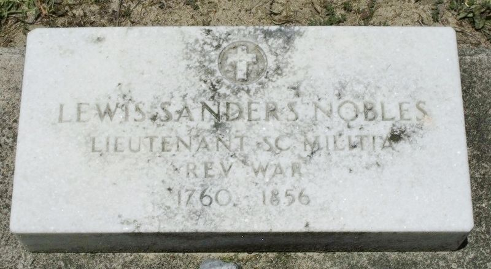

Lewis Sanders Nobles
1760–1856
Life Events
Born: 1760 — South Carolina, United States
Family
Children
Military Service
Branch: South Carolina Militia
Conflict: American Revolutionary War
Rank: Lieutenant (reported)
Service Year: 1778
Commanders: Captain Elijah Clarke, Colonel Roebuck
Pension Application: R7683
Research Notes: Revolutionary War service is described in published histories, the South Carolina Patriots roster, and Lewis's pension application. His 1854 pension claim was rejected for insufficient supporting proof.
Biography
Lewis Sanders Nobles was born around 1760 in South Carolina. According to Pioneers of Wiregrass Georgia, he lived in Edgefield District when the Revolutionary War began.
The published family history describes Revolutionary War service under Elijah Clark and other commanders. Lewis later applied for a Revolutionary War pension, but the application was rejected for insufficient proof of service.
According to Pioneers of Wiregrass Georgia, Lewis served as a lieutenant in the South Carolina militia in 1778. The same history reports that he received land through Georgia's 1827 and 1838 land lotteries as a Revolutionary War soldier. These claims provide additional leads for verifying his military service.
Land records cited in Pioneers of Wiregrass Georgia place Lewis and his wife Esther in Laurens County, Georgia, in 1813. An October 25, 1813, deed records their conveyance of two tracts totaling 400 acres to Seaborn Jones. Another deed dated November 3, 1814, identifies Lewis and his sons William, James, and Sanders Nobles in a transaction involving the same property.
Lewis married Esther Robinson, also recorded as Easter Robinson. They reportedly had thirteen children, including Levicy Nobles (1792–1868), who married David Sears in 1810.
Lewis and Esther lived in Montgomery and Laurens counties, Georgia. Esther reportedly died around 1840. Lewis spent his later years living with children and grandchildren.
Lewis died in Clinch County in 1856. Published family history and a government headstone application give November 1, 1856, although a newspaper account reports conflicting information.
Lewis was buried at Guest Mill Pond Cemetery, also known as Lang Country Church Cemetery, near Homerville in Clinch County, Georgia. A government grave marker was ordered in 1950.
Photos
No additional photographs have been added.
Grave & Burial

Sources
-
1854 Revolutionary War Pension Application of Lewis Sanders Nobles
Type: militaryFive-page Revolutionary War pension file, application R.7683, for Lewis Sanders Nobles of Clinch County, Georgia. Includes his 1854 application and an August 23, 1930, government letter to Folks Huxford. The letter states that the application was rejected because sufficient evidence of the claimed military service had not been provided.
-
1949 Military Headstone Application for Lewis Sanders Nobles
Type: militaryGovernment application dated September 15, 1949, for a military grave marker for Lewis Sanders Nobles (1760–1856), buried at Guest Mill Pond Cemetery, also known as Lang Country Church Cemetery, in Clinch County, Georgia. The application identifies him as a lieutenant in the South Carolina Militia under Captain Elijah Clark during the Revolutionary War and references pension application R.7683. The marker was ordered in April 1950.
-
Lewis Sanders Nobles - Revolutionary War Service Reference
Type: militaryCompiled genealogical reference card identifying Lewis Sanders Nobles (1760–1856), his burial at Guest Mill Pond Cemetery (also known as Lang Country Church Cemetery), and reported Revolutionary War service under Elijah Clarke. The card mentions King's Mountain, Brandywine, and Yorktown. Original compiler and repository are unknown; image obtained from another researcher's shared collection. Military service details have not been independently verified.
-
Lewis Sanders Nobles - Revolutionary War Pension Index Card
Type: militaryIndex card identifying Lewis Sanders Nobles under the name Nobles Sanders, or Lewis Sanders, and referencing rejected Revolutionary War pension application R.7683. Original repository and date of the card are unknown; image obtained from another researcher's shared collection.
-
Lewis Sanders Nobles - Roster of South Carolina Patriots
Type: militaryPage 731 of Roster of South Carolina Patriots in the American Revolution. The entry for Lewis Sanders Nobles, reference R7683, reports Revolutionary War service under Captain Elijah Clarke and Colonel Roebuck, with participation in the battles of Camden, King's Mountain, Cowpens, and Yorktown. The reference number matches his rejected Revolutionary War pension application. This is a compiled historical source; the reported service and battle participation have not been independently verified.